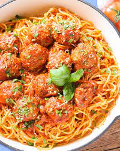

Delicious Spaghetti and Meatballs

Quite nothing moves the heart as much as a hearty portion of Spaghetti and Meatballs
With this recipe you can recreate that taste of home and have an amazing meal
Ingredients
- Minced Meat Pork and Beef
- Spaghetti
- Canned Tomatos
- Olive Oil
Step by Step Instructions
- Make your Meatballs.
- Fry them in a pan in olive oil and add the whole can of tomatos
- Let it simmer and cook your Spaghetti
- Add them in your sauce pan and it is time to taste. Additionally you can grate some Parmesan.